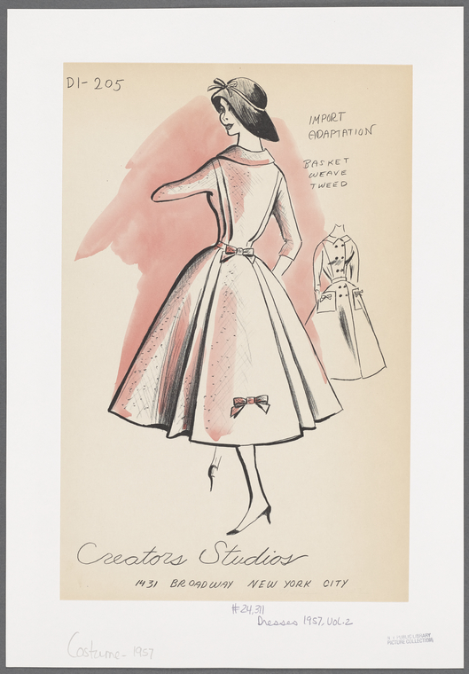

Redingote-style dress with shawl-collar jacket, chiffon halter and matching apron drape
Sashed cocktail dress with novelty closings at shoulders
Herringbone fitted dress with bishop-sleeve bloused jacket
Weave dress with contrasting jacket
Fitted shirtwaist dress with lapel notch repeated on back yoke
Plaid shirtwaist dress with tiered collar and bib
Striped dress with chevron panels at top front and back
Jumper-style striped dress with contrast placket, collar and sleeves and back closing
Shirtwaist dress with pintucked bodice, soft-pleated skirt and embroidered trim

Striped-fabric shirtwaist dress with placket and boat neckline
Cotton checked dress with spread collar and French cuff
 Basket-weave tweed double-breasted coat dress with bow ornaments, patch pockets and back Watteau pleats; sou-wester style cloche hat
Middy with scarf, 3/4-length sleeves, button detail at neckline and back; straight skirt below knee; pocket flap detail on blouse and skirt

Short-sleeved plaid dress with fitted high-waist button decoration, full skirt and contrast-fabric bodice; matching bolero with "cut-a-way" look and 3/4-length sleeves
Double-breasted checked tweed dress with double wing collar, yoke detailing and L-shaped pocket flaps